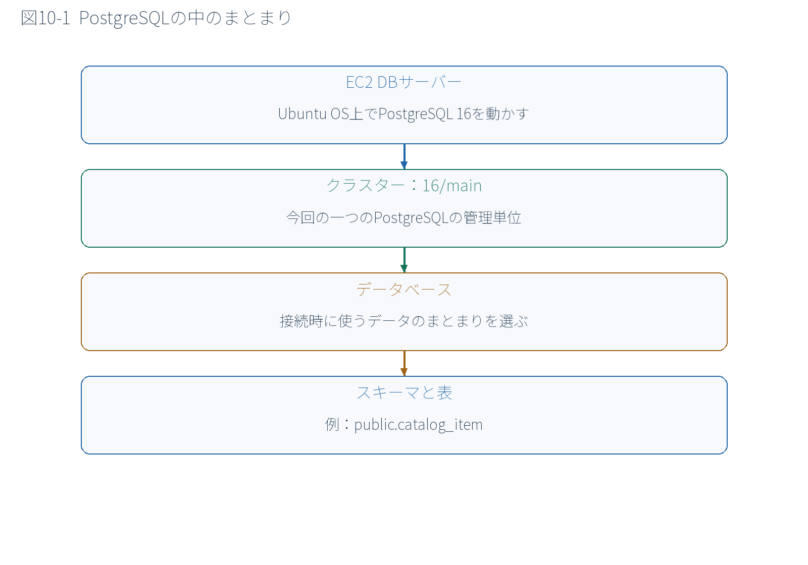
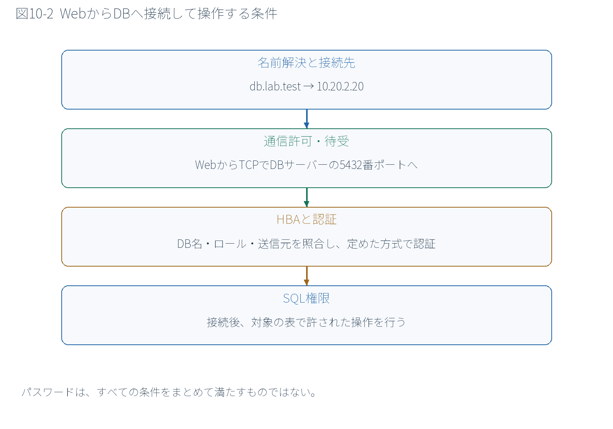
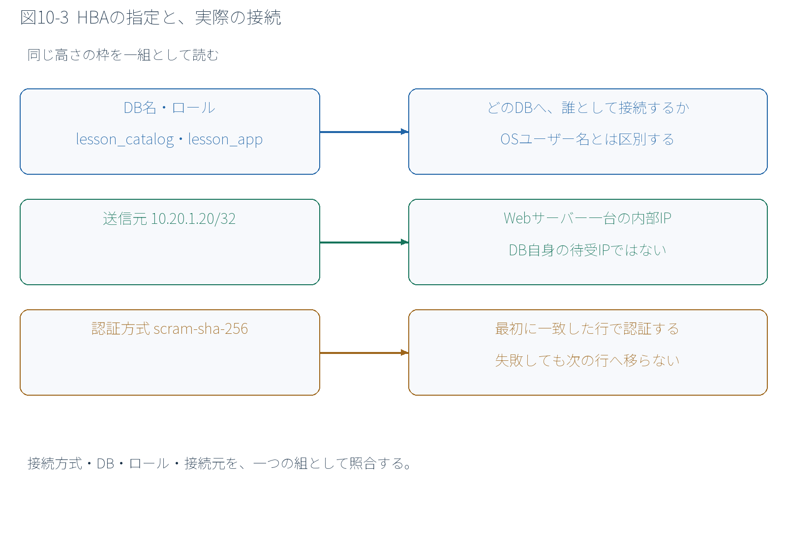

第10章 PostgreSQLの接続と認証
この章で分かること
Webサーバーのアプリが備品を読むには、DBサーバーへ接続し、適切なデータベースを選び、許可された操作を実行する必要がある。正しいパスワードだけを用意しても、このすべてが成立するわけではない。
本章では、PostgreSQLの中のまとまり、OSユーザーとDBのロール、接続を受け付ける設定と認証、個々のSQL操作の権限を順に結び付ける。
10.1 PostgreSQLの中のまとまりを知る
今回のDBサーバーにはPostgreSQL 16を導入する。Ubuntu OSでは、16/mainというクラスターを管理する。ここでのクラスターは、一つのPostgreSQLの管理単位である。
その管理単位の中に複数のデータベースを置ける。さらに、データベース内のスキーマは、表などの名前を整理するまとまりである。例えばpublic.catalog_itemは、publicスキーマ内のcatalog_item表を表す。

図10-1 接続先と、その中のデータのまとまり。 同じDBサーバーでも、選んだデータベースが違えば、同じ表名であっても別の対象になる。
pg_lsclustersではバージョン、クラスター名、ポート、稼働状態、保存先などを読む。今回、実際の処理を行うサービスはpostgresql@16-mainであり、まとめ役のサービスの表示だけで個別クラスターの状態を判断しない。
10.2 OSユーザーとDBロールを区別する
ロール（role）は、PostgreSQL内で権限を管理する単位である。ログインできるロール、他のロールへ権限をまとめて与えるロールなどとして利用できる。ロールはクラスター内で管理され、個別のデータベースだけに属するOSユーザーではない。DBロール
今回のDBサーバーには、OSユーザーとしてのpostgresと、DBの管理ロールとしてのpostgresがある。同じ名前でも管理する場所が違う。OSのroot権限やsudoが、そのまま別サーバーのDBへの接続資格になるわけではない。
| 種類 | 主な仕事 |
|---|---|
| OSの管理用ユーザー | PostgreSQLの設定ファイル、サービス、ログなどを管理する |
| DBの管理ロール | データベースやロールを作成し、権限を管理する |
| 構築用ロール | アプリ用の表や初期データなどを準備する |
| 通常アプリ用ロール | 一覧の取得や管理画面の保存に必要なSQLを実行する |
LOGINは、そのロールとして直接接続できる属性である。SUPERUSERはDB内の広い管理権限を持つ属性であり、LOGINと同じ意味ではない。通常アプリのために管理ロールの権限を使い続けず、用途を分ける。
10.3 所有者と、許された操作を分ける
DBや表などには所有者がいる。所有者はその対象の管理を行えるため、通常アプリを表の所有者にすると、必要以上の操作が可能になる。今回の構成では、構築用と通常用を分け、通常用へ必要な権限を与える。
GRANTは権限を与え、REVOKEは与えられている権限を取り除くSQLである。例えば、DBへのCONNECT、スキーマへのUSAGE、表へのSELECTは対象が異なる権限である。権限
説明用SQL：lesson_appへ表を読む権限を与える例。
GRANT SELECT ON public.lesson_item TO lesson_app;これは特定の表の読取りを許す例であり、表の作成、変更、削除をすべて許す指定ではない。INSERTやUPDATEを必要とする機能には、それぞれに対応する権限を検討する。番号を採番する場合には、シーケンス側の権限も別に読む。GRANT
10.4 WebサーバーからDBへ届く条件をつなげる
接続の前には、Webサーバーがdb.lab.testからDBサーバーの内部IP10.20.2.20を得る。その後、TCPでDBサーバーの5432番ポートへ接続する。

図10-2 接続してSQLを使うまでの条件。 左から順に関係する範囲を読む。パスワードが正しいことは、この中の認証に関わる一つの条件である。
SG（AWSのSecurity Group）がWebサーバーからDBサーバーへの通信を許し、PostgreSQLが正しいIP・ポートで待ち受けている必要がある。listen_addressesは、PostgreSQL自身のどのアドレスで受け付けるかを決める。接続元の許可リストではない。待受設定
今回の待受はDBサーバーの内部IPを使う。サービスの起動、待受IP、SG、名前解決をそれぞれ対応させる。DBサーバーはインターネットから直接使う入口として公開しない。
10.5 pg_hba.confで接続条件と認証方式を読む
PostgreSQLは、pg_hba.confで接続する方法、対象DB、ロール、送信元、認証方式を定める。HBAはHost-Based Authenticationの略である。
設定の説明例：説明用DB・ロールへの接続を、Webサーバー一台から許す一行。
host lesson_catalog lesson_app 10.20.1.20/32 scram-sha-256hostはTCP/IPによる接続、lesson_catalogはDB名、lesson_appは接続するロール、10.20.1.20/32は送信元のWebサーバー一台、scram-sha-256はパスワード認証に使う方式である。

図10-3 一つの接続を、HBAの一行と照合する。 10.20.1.20は接続元であり、DBサーバー自身の待受アドレス10.20.2.20とは用途が異なる。
HBAは上から読み、最初に接続条件が一致した行を使う。その行で認証が失敗しても、下の別の行へ移って試し直すわけではない。広すぎる許可行が先にあれば、後に置いた制限より先に使われる。HBAの照合
localは同じDBサーバー内のUnixソケット接続を扱う。今回、OSのpostgresから管理する接続ではpeerによりOSユーザーを照合する。WebサーバーからのTCP接続では、対応するhost行とパスワード認証を使う。password_encryptionを変えても、以前のパスワードの保存形式が自動ですべて更新されるわけではない。
10.6 接続した相手と実行者をSQLで読む
接続するときは、接続先ホスト、ポート、DB名、ロールをそろえる。パスワードは端末の非表示入力で渡し、共有資料やコマンドの引数へ書かない。
実行場所：Webサーバーの端末。説明用DB・ロールへ接続する例。
psql -h db.lab.test -p 5432 \
-U lesson_app -d lesson_catalog -W-hはホスト、-pはポート、-UはDBロール、-dはデータベースを指定する。-Wはパスワード入力を求めるオプションである。実際には、自分の構成で作成した対象を指定する。
実行場所：接続後のpsql内。
SELECT current_database(), current_user;表示例：説明用DBとロールの場合。
current_database | current_user
------------------+--------------
lesson_catalog | lesson_app
(1 row)この結果は、SQLを処理しているDBと実行者を示す。WebサーバーのOSユーザー名や、アプリ管理画面のログイン名ではない。
10.7 成功と拒否を、原因の範囲ごとに読む
| 見えた結果 | 主に調べる範囲 |
|---|---|
| 名前解決できない | Webサーバーの通常のDNS設定とDB名の登録 |
| 接続拒否・タイムアウト | 指定IP・ポート、サービス、待受、通信許可など |
| HBAで接続対象外 | DB名、ロール、送信元とHBAの行 |
| パスワード認証失敗 | 接続したロール、入力値、認証方式など |
| permission denied for table | 認証後に使おうとした表や操作の権限 |
例えば、表の権限不足という結果を受けたなら、DBまでの接続と認証を経て、SQLの操作を判定する段階に達している。反対に、タイムアウトだけでパスワードが誤っていると判断することはできない。
正しい接続の成功を基準に、許可しないDB・ロールの組合せや誤った認証が拒否されることを比べる。拒否を試すために既存データを削除する必要はない。
練習・課題4では、Webサーバーだけから、必要なDB・ロールで認証付きSQLを実行する構成を作る。アプリ用の表と、通常動作に必要な細かなSQL権限は、提供アプリの準備と合わせて後の章で扱う。
章末問題
問1
OSユーザーpostgresと、DBロールpostgresは同じ管理対象か。
問2
listen_addressesとHBAの送信元IPは、それぞれどちら側のアドレスを指定するか。
問3
HBAで最初に一致した行のパスワード認証が失敗したら、下の行で認証をやり直すか。
問4
ログインに成功すれば、すべての表をUPDATEできるか。
章末解答
問1
異なる。OSユーザーはUbuntu OSが管理し、DBロールはPostgreSQLが管理する。同名でも権限と照合する場所を区別する。
問2
listen_addressesはDBサーバー自身が待ち受けるIP、HBAの送信元は接続してくるWebサーバーなどのIPである。
問3
やり直さない。最初に条件が一致した行で認証する。その認証の失敗は、後続の行へ移る理由にならない。
問4
できない。接続の認証と、各表で許可する操作は別であり、必要なSQL権限が要る。
参考資料
確認日：2026-11-03。lesson_catalog、lesson_appは接続条件を読むための説明用の名前である。
・ DBロール
・ 権限
・ GRANT
・ 待受設定
・ HBA
・ psql
・ 練習P4